Architecture
DOT-Design separates reusable component description from deployment-instance topology. That separation allows a DOT to be authored and validated once, then instantiated in multiple compositions without embedding addresses, credentials, or orchestrator-specific connection objects in the DOT aggregate.
The diagrams use a consistent visual language: blue identifies authored or persistent artifacts, teal identifies validation and resolution activities, amber identifies decisions or incomplete evidence, green identifies successful outcomes, and red identifies rejection. Labels and line styles carry the same meaning when the documentation is printed without color; dashed lines indicate optional, indirect, or evidence-only relationships.
System context

DOT-Repository is the authoritative catalogue of reusable definitions.
dotx is the reference validation, resolution, deployment, and composition
client. Platform-native systems remain responsible for workload execution and
live state.
The runtime portion deliberately distinguishes where a workload runs from
how it is deployed. The domain model supports four PlatformEngine values
and six compatible manifest mappings:
-
Docker accepts
DOCKER_IMAGEandDOCKER_COMPOSE; -
Kubernetes accepts
KUBERNETES_MANIFESTandHELM_CHART; -
Vagrant accepts
VAGRANTFILE; and -
WebAssembly accepts
WASM_MODULE.
The current dotx lifecycle implements Docker Image, Docker Compose,
Kubernetes manifest, Helm chart, Vagrantfile, and WebAssembly execution. The
WebAssembly adapter uses Wasmtime with an explicit WASI_CLI or WASI_HTTP
world, verifies the module’s SHA-256 before execution, and grants only declared
guest environment and directory capabilities.
Source-of-truth boundaries
| Concern | Authoritative source | Explicitly excluded |
|---|---|---|
DOT identity and supported capability |
|
Composition-local instance names and live state |
Contract semantics |
OpenAPI, AsyncAPI, Protobuf, or GraphQL Contract payload |
Repeated protocol, media, schema, or security fields on a contract-backed Anchor |
Logical composition point |
|
Hosts, URLs, credentials, placement, health, and policy decisions |
Deployable endpoint declaration |
|
Allocated addresses, forwarded ports, and certificates |
Runtime configuration surface |
|
Operator-supplied values already applied to one deployment |
Multi-DOT topology and readiness |
Composition document wires and |
Changes to either participating |
Runtime state |
Platform-native resources plus private |
Contract or Anchor metadata |
Repository architecture
DOT-Design
├── DOT-Domain Java model and validation
├── DOT-CLI independent Go CLI and reference executor
├── DOT-Repository DOTs, high-level Skills, and generated Schema (submodule)
├── DOT-Testing conformance, composition, interoperability, and E2E evidence
└── DOT-Docs Antora sources, UI, playbooks, and generated diagramsThe Maven build contains the DOT-Domain Java module. DOT-CLI has its own Go
module and lifecycle. DOT-Testing is deliberately outside both module
hierarchies. DOT-Repository is the only admitted source for valid deployable
DOT definitions used by shared tests. It also owns the generated JSON Schema
and the optional high-level Skill classification catalogue, avoiding separate
repositories for assets that evolve with the DOT catalogue.
DOT aggregate
Dot is the aggregate root. Its primary relationships are:
Dot
├── Skills[] human-readable capabilities
├── Contracts[] authoritative interaction definitions
├── Anchors[] stable logical composition points
└── Runtimes[]
├── Platform where execution occurs
└── Deployments[]
├── DeploymentManifest how deployment occurs
└── DeploymentService[]
├── Contract references
├── ServicePort[]
├── AnchorBinding[]
└── DeploymentConfigSkill and Contract are independently identified domain entities. Root
Dot.contracts carries authoritative Contract declarations (with legacy
UUID-only catalogue references accepted during migration), while deployment
services continue to reference those Contracts by ID only.
Anchors, Runtimes, Deployments, services, bindings, and configuration
declarations are embedded values owned by the DOT aggregate.
The class-level @ValidAnchor constraint delegates aggregate traversal to
AnchorValidator. It enforces Anchor identity, Contract membership, selector
syntax, and service-port binding consistency without placing cross-reference
logic in Dot.
Contract, Anchor, binding, and wire
These four concepts form a resolution chain but have different owners:

-
The Contract defines the interaction.
-
The Anchor identifies one logical participation point.
-
The binding says which declared service port implements that Anchor.
-
The wire connects named deployment instances.
-
The optional materializer writes a resolved value into configuration that the receiving service has already declared.
See DOT Anchors and Composition for the field model, compatibility rules, and examples.
Runtime and deployment separation
The model separates two orthogonal questions:
| Concept | Field | Answers |
|---|---|---|
|
|
Where does the workload run? For example Docker, Kubernetes, Vagrant, or WebAssembly. |
|
|
How is it deployed? For example Docker image, Kubernetes manifest, Helm chart, Vagrantfile, or WASM module. |
Every manifest type declares its target platform. Runtime validation rejects a deployment whose manifest mechanism does not align with its platform.
DeploymentService is the unit that binds a deployed service to Contracts,
named ports, Anchors, and supported configuration. Configuration is
service-scoped; there is no deployment-level shared configuration surface.
Contract resolution
The reference resolver maps an Anchor selector to an authoritative Contract element:
AnchorContract(id, selector)
|
v
load Contract by UUID
|
v
standard-specific resolver
|
v
identifier + interaction + protocols + media types
+ input/output schema references + security scheme namesResolution is read-only. Derived facts are returned to consumers and never written back into the Anchor. Contractless Anchors already carry their explicit direction, protocols, and media types and therefore have no selected Contract element.
Composition resolution
The stable Composition v1 executor uses a compile-like pipeline:

-
Validate the strict Draft 2020-12 composition shape.
-
Load each local DOT source and verify the pinned UUID and version.
-
Load each Contract input and verify its UUID.
-
Select one deployment for every named DOT instance.
-
Resolve Anchor references and service-port bindings.
-
Evaluate three-state compatibility:
COMPATIBLE,INCOMPATIBLE, orUNKNOWN. -
Derive connection endpoints, explicit cross-platform network ownership, parameter values, security status, and materializers.
-
Build a deterministic plan and readiness order.
-
On apply, prepare configuration and delegate workload operations to the existing single-DOT lifecycle adapters.
Planning may retain UNKNOWN with reason codes so missing evidence is visible.
Apply rejects UNKNOWN rather than treating absence of evidence as compatibility.
Security boundaries
DOT-Design models declarations and explicit grants; it does not infer trust.
-
Contract security requirements remain in the Contract.
-
Sensitive deployment values are supplied by reference, not embedded in a composition or persisted as resolved values.
-
OCI capabilities, host namespaces, volumes, and CDI devices require exact DOT declarations and exact operator grants.
-
A configured wire does not prove credential validity, authorization, remote attestation, policy compliance, or network reachability.
-
An
EXTERNAL_GATEWAYbinding records operator ownership andNONEcleanup; it does not assert thatdotxprovisioned or verified the gateway. -
Cross-domain admission decisions belong to deployment or policy systems.
Active traffic and trust evidence must be collected by scenario-specific probes after deployment.
Catalogue and API boundaries
DOT-Repository versions reusable definitions and its catalogue metadata in
Git. dotx repository validates and resolves those entries; dotx compose
provides the executable compatibility reference. A future remote catalogue or
API is free to use another language, framework, storage engine, and transport
provided it preserves the domain semantics and passes the consumer acceptance
profile.
dotx compose stores private, local lifecycle state under the user’s cache
directory. Per-composition locking prevents concurrent local lifecycle commands
from racing that state. The current model is therefore explicitly single-host;
shared orchestration state remains future work.
Design principles
-
Reuse established Contract standards instead of inventing parallel protocol models.
-
Keep stable logical identity separate from runtime location.
-
Make adapters, transformations, privileges, and secret access explicit.
-
Fail closed on ambiguity and missing security evidence.
-
Preserve independently versioned DOT definitions; keep topology in composition.
-
Treat generated plans and test evidence according to what they actually prove.